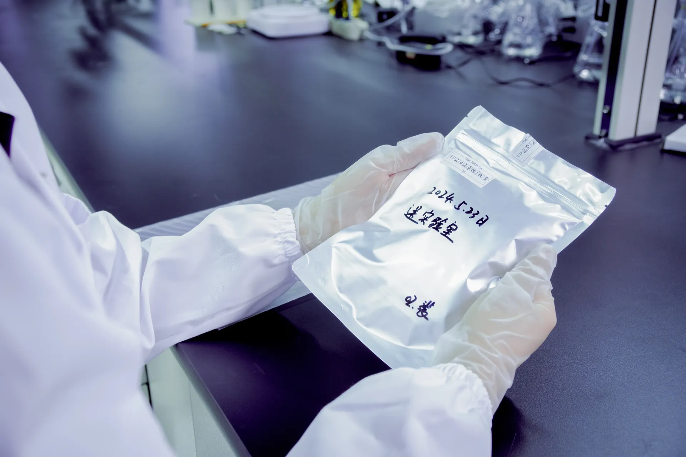

The question every memorial diamond customer asks first is: How does this actually work? How does a strand of hair — something soft, organic, and perishable — become a hard, brilliant diamond that will last forever?
TL;DR — Quick Summary
Transforming hair into a memorial diamond involves six precise stages: sample collection and verification, carbon extraction via thermal decomposition, acid purification to remove contaminants, high-temperature graphitization, HPHT diamond synthesis under 5–6 GPa and 1,300–1,600°C, and final cutting, polishing, and independent gemological certification. The complete process takes approximately 60 days.
The answer involves six precise stages: sample collection and verification, carbon extraction, purification, graphitization, HPHT diamond synthesis, and finally cutting, polishing, and grading. Each stage requires specific laboratory equipment, trained technicians, and rigorous quality control. This article walks through the complete process as practiced at BioGem Lab's manufacturing facility in Luoyang, China.
Step 1: Sample Collection and Verification
The process begins when a partner — typically a pet cremation service, veterinary clinic, or memorial brand — submits a hair or fur sample. For human memorial diamonds, the sample usually comes from the customer directly or through a funeral home partner. For pet memorial diamonds, fur is collected after grooming or during the cremation preparation process.
The minimum sample requirement is approximately 0.5 grams of hair or fur — roughly the volume of a cotton ball. This contains sufficient carbon to produce diamonds up to 1.0 carat. For larger stones or multiple diamonds from the same source, 1–2 grams is recommended.
Upon receipt at the laboratory, each sample undergoes:
- Weight verification — Sample mass is recorded to confirm sufficient carbon content for the ordered diamond size.
- Visual inspection — Technicians examine sample purity, checking for synthetic fiber contamination, excessive moisture, or mixed-source material.
- Barcode assignment — A unique tracking ID is assigned, linking the physical sample to the partner order, customer name, and expected production timeline.
- Photographic documentation — The sample is photographed in its original packaging for chain-of-custody records.
Important: All samples are handled under chain-of-custody protocols. The tracking barcode follows the sample through every processing stage, ensuring the final diamond can be traced back to the exact source material submitted.
Step 2: Carbon Extraction
Hair is approximately 45% carbon by dry weight, but that carbon is locked in complex organic molecules — primarily keratin protein with sulfur cross-links, melanin pigment, and trace lipid residues. The extraction process must break these molecular bonds and isolate pure carbon.
BioGem Lab uses a patented carbon extraction process (Chinese National Invention Patent ZL 201010565778.9) that operates in three sub-stages:
2.1 Thermal Decomposition
The hair sample is placed in a controlled-atmosphere furnace and heated to 800–1,000°C in an oxygen-limited environment. At these temperatures, organic molecules pyrolyze — hydrogen, oxygen, nitrogen, and sulfur volatilize as gases, leaving behind a carbon-rich char. The process takes 4–6 hours and reduces the sample mass by approximately 85–90%.
2.2 Chemical Purification
The char is treated with acid solutions to dissolve mineral residues (calcium, sodium, magnesium salts that originate from hair's natural mineral content and environmental exposure). Multiple wash cycles with deionized water remove acid traces. The result is a fine black powder: amorphous carbon with purity typically exceeding 99.5%.
2.3 Quality Analysis
The extracted carbon is analyzed using infrared spectroscopy and elemental analysis to confirm purity. If residual nitrogen content exceeds acceptable thresholds (nitrogen affects diamond color during HPHT growth), additional purification cycles are applied. This quality gate ensures consistent diamond color outcomes.

Figure 1: Carbon extraction stage — hair samples are weighed, catalogued, and prepared for thermal decomposition in controlled-atmosphere furnaces.
Step 3: Graphitization
Amorphous carbon — the black powder produced by extraction — cannot be used directly in HPHT synthesis. Diamond grows from graphite, the crystalline allotrope of carbon where atoms are arranged in layered hexagonal sheets. The graphitization stage converts the disordered amorphous carbon into ordered graphite.
The purified carbon powder is placed in a graphitization furnace and heated to 2,600–3,000°C in an inert atmosphere (typically argon). At these temperatures, carbon atoms mobilize and self-organize into graphite's characteristic layered structure. The process takes 12–24 hours depending on batch size.
The quality of graphitization directly impacts diamond growth:
- Well-graphitized carbon produces faster, more uniform diamond growth with fewer defects.
- Incomplete graphitization leads to slower growth, inclusions, and color inconsistency.
- Over-graphitization can produce excessively large graphite crystallites that disrupt growth cell geometry.
BioGem Lab's patented extraction system (integrated with our graphitization protocol) achieves high graphitization efficiency in a single cycle, contributing to our shorter overall production timeline.
Step 4: HPHT Diamond Synthesis
This is the stage where graphite becomes diamond. The HPHT (High-Pressure High-Temperature) press replicates the natural diamond formation conditions found deep within Earth's mantle.
The process works as follows:
- Growth cell assembly — Graphite powder is loaded into a cylindrical growth cell with a metal catalyst solvent (typically Fe-Ni-Co alloy) and a small diamond seed crystal. The seed determines the crystallographic orientation of the growing diamond.
- Press loading — The growth cell is placed between two tungsten carbide anvils inside the HPHT press.
- Pressure application — Hydraulic systems compress the growth cell to 5–6 GPa (50,000–60,000 atmospheres).
- Heating — An electric current heats the cell to 1,300–1,600°C.
- Growth — The metal catalyst melts, dissolves the graphite, and transports carbon to the cooler diamond seed where it crystallizes. Growth continues for 10–20 days depending on target carat weight.
- Cooling and decompression — Temperature is gradually reduced, then pressure is released. The growth cell is extracted and disassembled.
The raw diamond — called a "diamond rough" — emerges as an octahedral or cuboctahedral crystal with a dull, opaque surface. It is typically black or dark in appearance due to graphite residue and metal catalyst traces on the surface. The actual gem quality is revealed only after cutting and polishing.
Figure 2: HPHT synthesis preparation — graphite-loaded growth cells are positioned for press loading under cleanroom conditions.
Step 5: Cutting and Polishing
Diamond rough is beautiful only to a crystallographer. Transforming it into a brilliant gemstone requires precision cutting and polishing — stages that account for a significant portion of memorial diamond production cost and time.
The process involves:
- Planning — A 3D scanner maps the rough diamond's internal structure and external shape. Software calculates the optimal cut that maximizes carat weight while achieving the desired proportions.
- Cleaving or sawing — If the rough contains multiple usable sections, it is split along natural cleavage planes using a diamond-tipped blade laser or mechanical saw.
- Bruting — Two diamonds are rotated against each other to shape the round outline (for brilliant cuts) or other desired profile.
- Faceting — A rotating scaife (polishing wheel) charged with diamond dust grinds precise flat facets. For a standard round brilliant, 57 or 58 facets are cut at precisely calculated angles to maximize light return.
- Polishing — Final polishing removes microscopic scratches and brings the surface to optical clarity.
The cutting and polishing stage typically takes 5–10 days depending on diamond size, cut complexity, and quality requirements.
Step 6: Grading and Certification
The finished diamond is submitted for gemological grading. BioGem Lab provides:
- China Gemstone Certificate — Domestic grading report assessing the 4Cs (Carat, Color, Clarity, Cut) according to Chinese national gemological standards.
- CCIC National Traceability Certificate — A traceability code linking the diamond to the original carbon source, production batch, and laboratory records. This is our primary trust credential for B2B partners.
- Optional IGI Certificate — International Gemological Institute grading available upon partner request for markets requiring internationally recognized documentation.
Each certificate includes a unique identification number, diamond measurements, grading photographs, and the traceability barcode that connects the finished gem to its production history.
Total Timeline: How Long Does It Take?
For a typical 0.25–1.0 carat memorial diamond, the complete timeline from sample receipt to certified gem delivery is approximately 55–65 days:
| Stage | Duration | Cumulative |
|---|---|---|
| Sample receipt & verification | 1–2 days | Day 1–2 |
| Carbon extraction | 1–2 days | Day 3–4 |
| Graphitization | 1–2 days | Day 5–6 |
| HPHT synthesis | 10–20 days | Day 16–26 |
| Cutting & polishing | 5–10 days | Day 21–36 |
| Grading & certification | 5–7 days | Day 26–43 |
| Quality control & packaging | 2–3 days | Day 44–46 |
| Shipping to partner | 18–25 days | Day 51–60 |
Note that HPHT synthesis and cutting/polishing stages overlap partially — while one batch is in the press, the previous batch is being cut. This parallel processing is how BioGem Lab maintains its ~60-day average turnaround.
Conclusion
The transformation from hair to diamond is not magic — it is a carefully engineered sequence of chemical, thermal, and mechanical processes, each requiring specialized equipment and trained technicians. What makes memorial diamonds meaningful is not the complexity of the science (though that is considerable), but the fact that the carbon atoms in the final gem genuinely originated from a living being.
For B2B partners, understanding this process is essential for customer communication. Pet owners and grieving families will ask detailed questions about how their memorial diamond was made. Having clear, accurate answers builds trust and justifies premium pricing.
BioGem Lab provides partners with detailed process documentation, sample certificates, and production updates at every stage — ensuring that the businesses selling our white-label memorial diamonds can speak with authority about how they are made.
About BioGem Lab
BioGem Lab is a B2B memorial diamond manufacturer operating from Luoyang Institute of Technology National University Science Park, China. Since 2012, our patented carbon extraction technology (ZL 201010565778.9) has powered memorial diamond production for partners worldwide. We supply white-label and OEM memorial diamonds to pet cremation services, veterinary clinics, memorial brands, and funeral enterprises worldwide. We do not sell directly to consumers.
Frequently Asked Questions
Are memorial diamonds made from hair real diamonds?
Yes. They are chemically, physically, and optically identical to natural diamonds. Both are crystalline carbon with the same hardness, refractive index, and thermal conductivity. The only difference is the carbon source: biological carbon from hair or fur, not geological carbon from the earth's mantle.
How long does the hair-to-diamond process take?
The complete process from sample receipt to certified gem delivery is approximately 55–65 days. HPHT synthesis accounts for 10–20 days, cutting and polishing 5–10 days, and certification 5–7 days. Parallel processing between stages allows BioGem Lab to maintain an average ~60-day turnaround.
Can hair or fur be collected gradually over time?
Yes. Many pet owners prefer to collect hair gradually, especially for senior pets or those with medical conditions where grooming is frequent. The key is proper storage: use a dry, airtight container (zip-lock bag or small glass jar), keep it away from moisture, direct sunlight, and heat, and label each collection with the date and pet name to maintain traceability. Hair collected over time and stored properly retains its carbon structure without degradation. Once you reach the minimum 6 grams, the sample can be submitted for processing.
What carat sizes are available, and can I order smaller sizes like 0.5ct?
Our standard production line focuses on four carat sizes: 0.50ct, 1.00ct (primary SKU, recommended), 1.50ct, and 2.00ct. We do not produce 0.5ct or 0.30ct memorial diamonds. Our experience shows that 1.00ct provides the optimal balance of visual presence, production stability, and customer satisfaction for memorial applications. For partners requesting smaller sizes, we recommend 0.50ct as the minimum viable option.